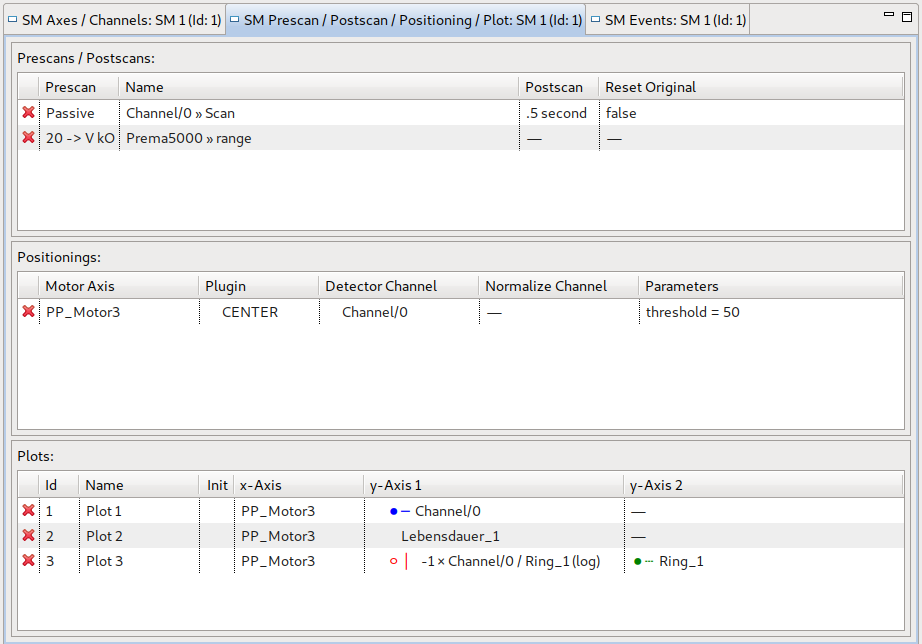
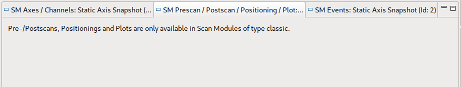

The content of the SM Prescan / Postscan / Positioning / Plot View depends on the type of the currently selected scan module. It allows adding/deleting and editing properties of prescans, postscans, positionings and plots in certain cases. The different appearances are shown in the following.
For a common (a.k.a. classic) scan module the view looks as follows:

Allows adding/removing of and displays Pre- and Postscans of the currently selected scan module. Properties of Pre-/Postscans can be modified directly in the table.
Allows adding/removing of and displays Positionings of the currently selected scan module. Properties of Positionings can be modified directly in the table.
Allows adding/removing of and displays Plots of the currently selected scan module. Properties of Plots can be modified directly in the table.
Pre-/Postscans, Positionings and Plots are only available in scan modules of type classic. Hence when a scan module of another type is selected, no editing options are available. A hint is shown then:
